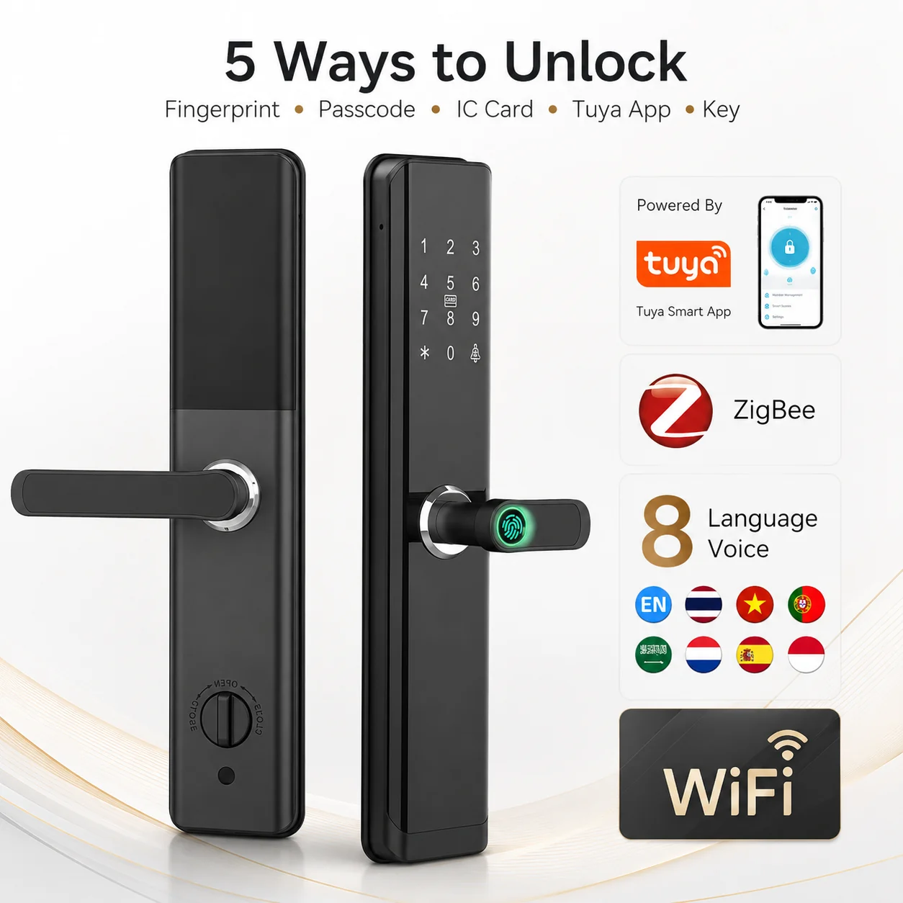
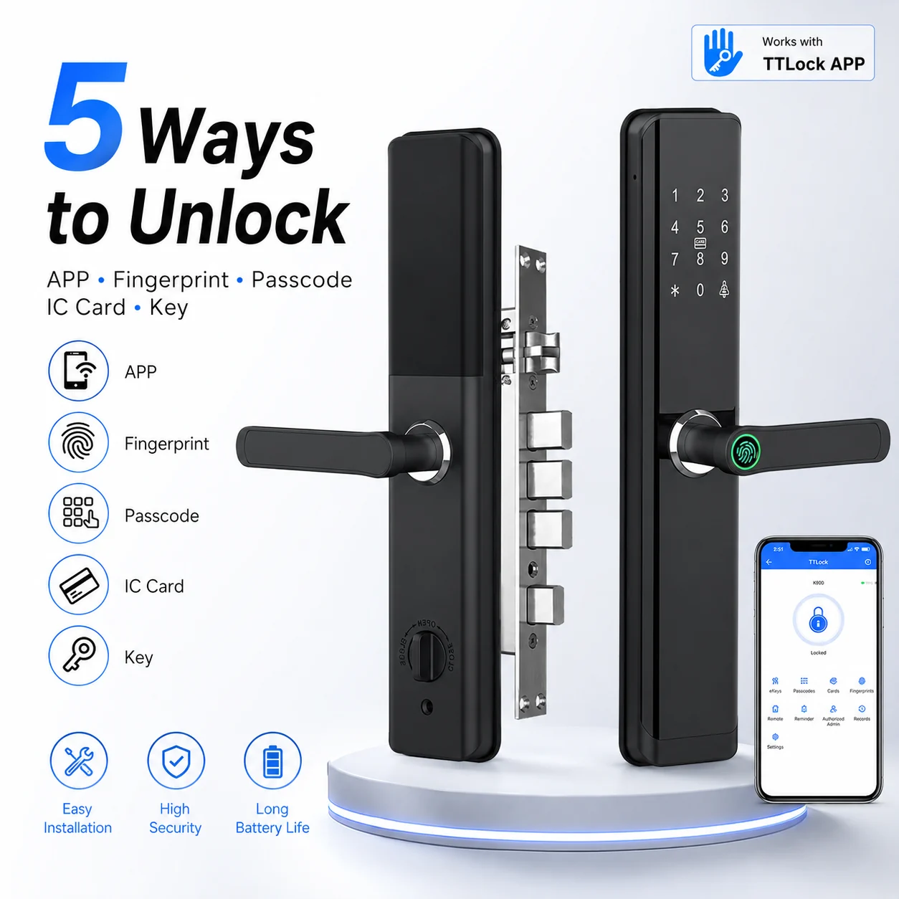

Connected App Options
TTLock and Tuya app options support flexible access management for selected configurations.



BOLVRA SMART LOCK SERIES
Tuya and TTLock Smart Lock
A connected smart lock solution with TTLock and Tuya app options for flexible access management. It supports fingerprint, passcode, IC card and mechanical key unlocking, and can be matched with multiple mortise lock body models for residential, rental and project installations.
TTLock and Tuya app options support flexible access management for selected configurations.
Fingerprint, passcode, IC card and mechanical key access support different user needs.
The model can be matched with multiple mortise lock body models for project installations.
It has TTLock and Tuya app options, subject to the selected configuration.
Fingerprint, passcode, IC card and mechanical key access are listed for this model.
BVR-7100 supports multiple mortise lock body models. Confirm the exact model and door requirement before ordering.
Tell us your door type, lock body requirement and target market.